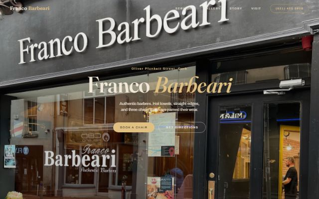
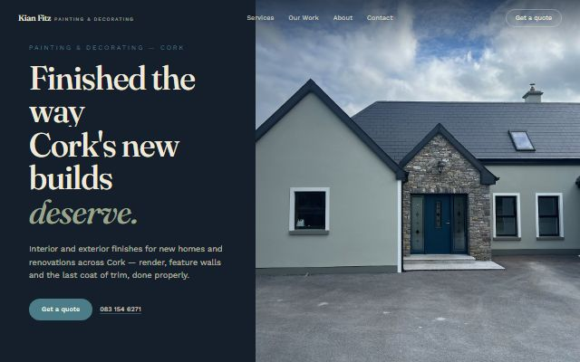
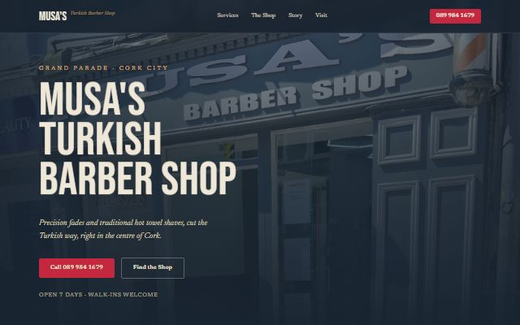
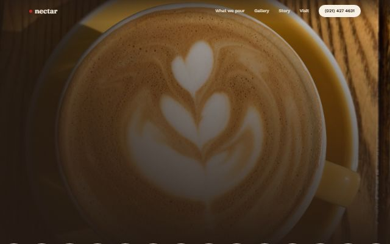

01 · AI automation
auto-websites
One command finds local businesses with no website, pulls their real photos, and has Claude Code design and build a bespoke site for each one. Then it deploys them.
- 44 sites built, 39 live on GitHub Pages
- Google Places search → filter → photos → headless build → deploy
- Every site follows a strict design brief: no templates, no stock art
- Open source: a local app where you pick any city, choose businesses, edit the design brief and watch each site build live